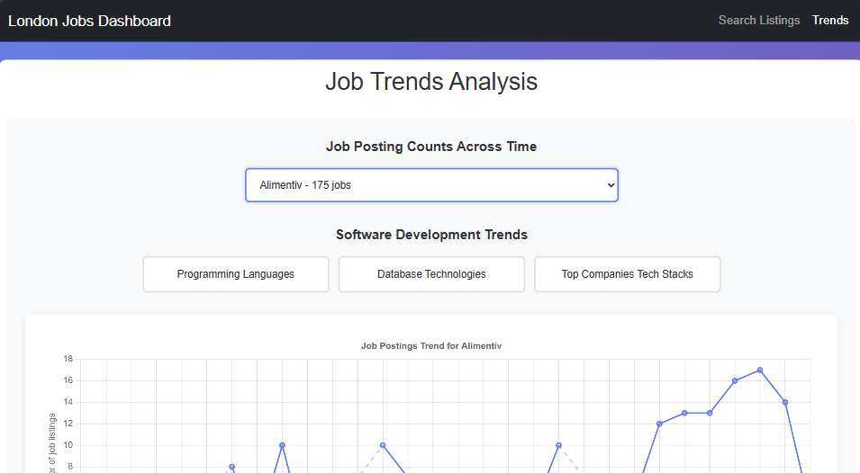

londonjobsdashboard.ca
Historical database of tech job listings in London, Ontario. Job listings can be searched and analysed for company and sector trends over time. App runs an automatic ETL pipeline using Python to collect jobs. API served over Express.js.

{kind=link}
Retainer Designer
A 3D Slicer plugin for designing an orthodontic retainer wire for a wire‑bending machine. The user sets a 3D plane to intersect a jaw model and generate points representing the retainer wire. Points can be adjusted in a 3D view with real-time visual feedback. Written in Python.

Skin Model Maker
A 3D Slicer plugin for designing a 3D printable skin model for surgical planning from abdominal scan. The user imports a CT scan and csv file containing a series of x-y coordinates representing target surgical endpoints. The software returns a 3D model representing the outer skin surface with holes corresponding to the user csv file. The csv data and GUI interface allows for adjustments of hole size and position of embossed labels.
3D Slicer Scripts
Plugin and script development for 3D Slicer medical imaging platform using Python.
ImageJ Analysis Scripts
Plugin and script development for ImageJ using ImageJ Macro Language for image analysis.
R Analysis Scripts
Data processing scripts written in R for auditory measurements and analysis.
Scientific Study
Statistical analysis scripts written in R for scientific study.
Scientific Study
Statistical analysis scripts written in R for scientific study.